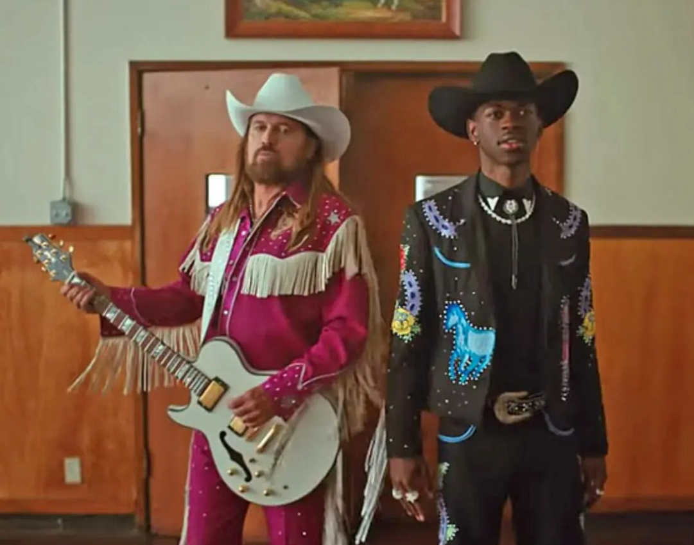

A falta de presença negra no Coutry
Beyoncé é a primeira mulher negra a chegar ao topo das paradas de sucesso do gênero country no ranking da revista Billboard, publicado desde 1958.O feito veio com a música “Texas Hold’Em”, lançada em 11 de fevereiro, no intervalo comercial do Super Bowl (final do campeonato de futebol americano).
Negros x Coutry

O episódio da rádio de Oklahoma reascendeu nas redes sociais um debate de anos. Em 2019, a Billboard retirou “Old Town Road”, de Lil Nas X, das paradas de country. A exclusão causou reações que impulsionaram a chamada “agenda yeehaw”, que celebra cowboys e cowgirls negros na cultura pop, como contou o jornal The Guardian. O country tem um histórico ligado ao racismo, apesar de sua origem multiétnica. Surgido na década de 1920 a partir de elementos do blues e uso de instrumentos de corda (como violão, banjo africano e bandolim italiano), o gênero deslanchou na época das leis de Jim Crow (1877-1965), que segregavam negros e brancos no sul dos EUA, conforme lembrou o site G1 em reportagem de 2023.
